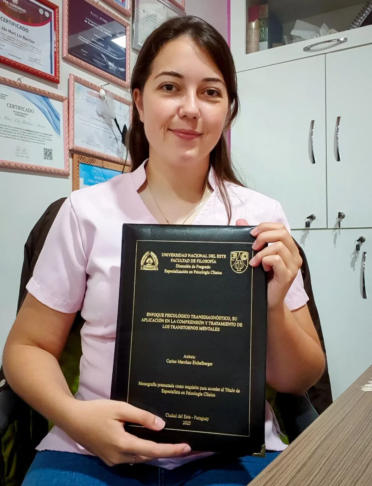

Te acompaño en tu camino hacia el bienestar emocional.
Un espacio seguro, empático y confidencial, con la Lic. Carine Marchao. Reconectá con tu fortaleza interior a través de la terapia clínica personalizada.

Conocé a Lic. Carine Marchao
Psicóloga clínica recientemente graduada, con una profunda vocación por acompañar a las personas en sus procesos de cambio y bienestar emocional.
Mi trabajo se basa en la empatía, la escucha activa y el respeto por la singularidad de cada historia, creando un espacio seguro donde puedas expresarte con confianza.
Me encuentro en constante formación para brindarte herramientas actualizadas y acompañarte de manera profesional en tu camino hacia una vida más equilibrada.
¿En qué puedo ayudarte?
Atención terapéutica especializada, adaptada a tu historia y necesidades únicas.
Terapia Individual
Un espacio personal para explorar tus emociones, pensamientos y conductas. Trabajamos juntos en superar ansiedad, depresión, duelo o crisis vitales.
Consultar arrow_forwardTerapia para Adolescentes
Acompaño a jóvenes en sus procesos de identidad, manejo emocional y relaciones sociales, con un enfoque empático y libre de juicios.
Reservar turnoManejo de Ansiedad
Técnicas especializadas para reducir el estrés y recuperar el control sobre tu vida y tu bienestar emocional cotidiano.
Consultar arrow_forwardMindfulness Clínico
Cultivá la presencia y la consciencia para mejorar tu salud mental y tu foco en el día a día.
Sesiones Online
Terapia profesional desde la comodidad de tu hogar, con total confidencialidad y flexibilidad horaria.
Por qué elegir este espacio
Cada sesión está diseñada para que te sientas escuchado/a, respetado/a y acompañado/a.
Confidencialidad total
Todo lo que compartís queda entre nosotros. Cumplimos estrictamente con el secreto profesional.
Enfoque personalizado
Adapto las herramientas terapéuticas a tu historia y necesidades particulares.
Horarios flexibles
Turnos disponibles de mañana, tarde y algunos sábados. Online con amplia disponibilidad.
Sin lista de espera
Primera consulta disponible en menos de 72 hs. No tenés que esperar para comenzar.
Atención global
Atendo desde cualquier lugar del mundo. Solo necesitás conexión a internet y privacidad.
Sin juicios
Un espacio cálido y libre de prejuicios. Aquí podés ser exactamente quien sos.
Lo que dicen quienes ya dieron el paso
Experiencias reales de personas que decidieron apostar por su bienestar.
"Llegué en un momento muy oscuro y Cari supo acompañarme con una sensibilidad extraordinaria. Hoy me reconozco de una manera que nunca imaginé posible."
"La terapia online con Carine fue un cambio de vida. Vivo en el exterior y poder tener un espacio en español, con tanto profesionalismo, fue invaluable."
"Mi hija adolescente se resistía mucho al psicólogo. Con Carine conectó desde la primera sesión. Hoy es ella quien quiere ir. No tengo palabras para agradecerle."
Hablemos
El primer paso es el más valioso. Te respondo por WhatsApp a la brevedad.
- chat +595 981 771474
- mail carinemarchao@gmail.com
- location_on Colonia Narajito · San Vicente · Gral. Resquin
- schedule Lun–Vie 9–20 hs · Sáb 9–14 hs